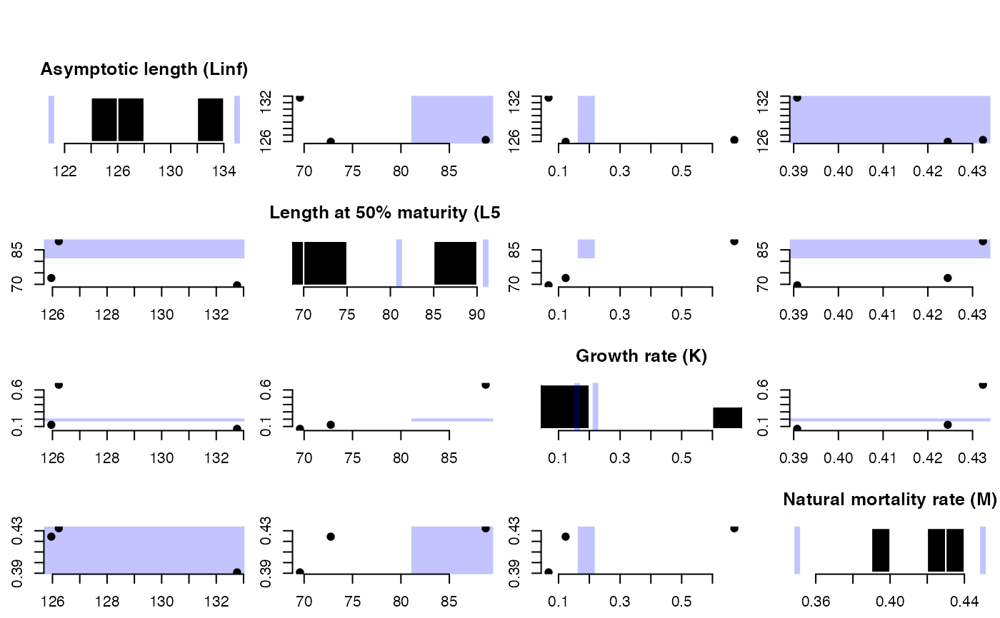
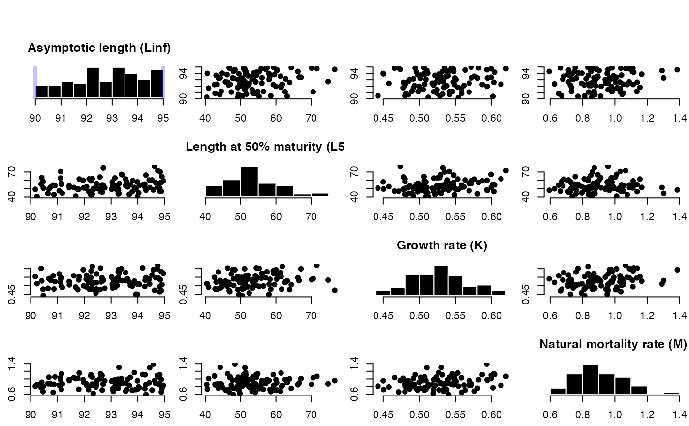
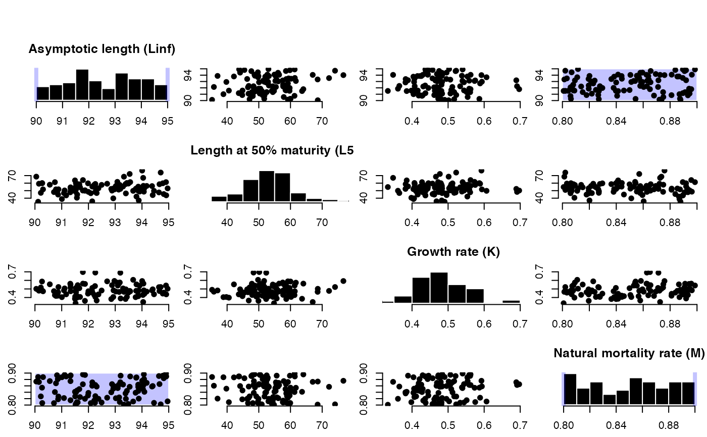
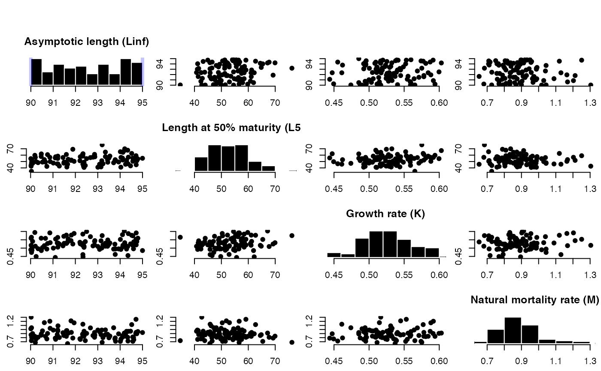
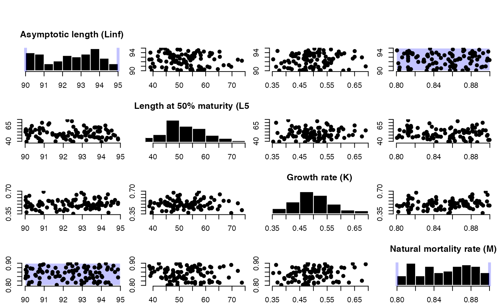
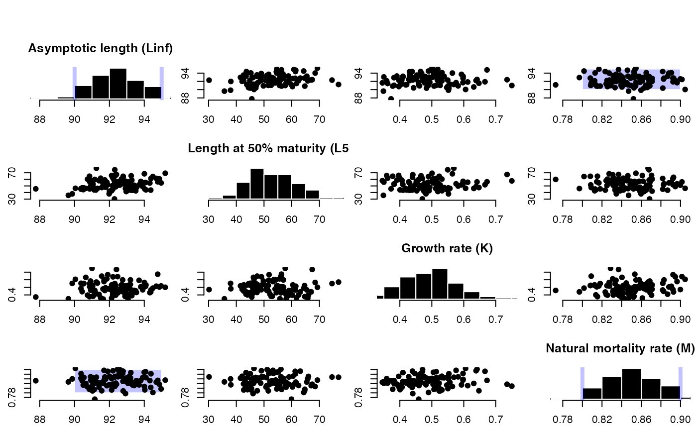

Predict missing life-history based on taxonomic information and hierarchical model fitted to FishBase life-history parameters
LH2OM( OM, dist = c("unif", "norm"), filterMK = FALSE, plot = TRUE, Class = "predictive", Order = "predictive", Family = "predictive", msg = TRUE, db = MSEtool::LHdatabase ) predictLH( inpars = list(), Genus = "predictive", Species = "predictive", nsamp = 100, db = MSEtool::LHdatabase, dist = c("unif", "norm"), filterMK = TRUE, plot = TRUE, Class = "predictive", Order = "predictive", Family = "predictive", msg = TRUE )
| OM | An object of class 'OM' |
|---|---|
| dist | Character. Should parameters be sampled from a uniform ( |
| filterMK | Logical. Should the predicted M and K parameters be filtered within the range specified in |
| plot | Logical. Should the plot be produced? |
| Class | Optional higher order taxonomic information |
| Order | Optional higher order taxonomic information |
| Family | Optional higher order taxonomic information |
| msg | Logical. Should messages be printed? |
| db | Database from FishLife model with fitted model results |
| inpars | A named list with lower and upper bounds of provided parameters: Linf, L50, K and M (must be length 2). Unknown or missing parameters should not be included. For example, an empty list assumes that all four life history parameters are unknown and need to be estimated. See Details below for more information. |
| Genus | Character string specifying the Genus name. Optional. Default is 'predictive' |
| Species | Character string specifying the Species name. Optional. Default is 'predictive'. If full species name (Genus + Species) is not found if FishLife database (based on FishBase) higher order taxonomy will be used (e.g., Family) for the predictions. |
| nsamp | The number of samples to return |
https://github.com/James-Thorson-NOAA/FishLife
LH2OM: An OM with OM@cpars populated with OM@nsim samples of M, K, Linf and L50
predictLH: A data.frame with nsamp rows with Linf, L50, K, and M values.
The model predicts missing life-history parameters based on provided parameters and taxonomic information.
If both M and K are provided in inpars or OM, K values are predicted and predictions filtered
so that resulting K values are within bounds specified in inpars$K or OM@K (see filterMK).
If both Linf and L50 are provided in inpars or OM, L50 values are predicted and values in inpars$L50
or OM@L50 are ignored.
LH2OM: Predict missing life-history and populate OM@cpars
predictLH: Predict missing life-history based on taxonomic information and
hierachical model fitted to FishBase life-history parameters
Thorson, J. T., S. B. Munch, J. M. Cope, and J. Gao. 2017. Predicting life history parameters for all fishes worldwide. Ecological Applications. 27(8): 2262--2276
A. Hordyk
#>#> Predicting K from M #>#> Predicting from all species in FishBase #>#> Predicting L50 from Linf #>#> Predicting K from M #>#> Predicting from all species in FishBase #># predict life-history parameters and return a data frame # predict all life-history parameters Predicts <- predictLH(list(), "Katsuwonus", "pelamis")#> Predicting Linf #>#> Predicting L50 #>#> Predicting K #>#> Predicting M #>#> Species match: Actinopterygii Perciformes Scombridae Katsuwonus pelamis #>#> Linf L50 K M #> 1 87.24762 53.64726 0.5241764 1.0679792 #> 2 94.44834 59.73995 0.4550071 0.8120727 #> 3 88.68895 77.31291 0.5793767 1.0245376 #> 4 84.96662 47.58706 0.5645089 0.9887524 #> 5 88.27416 47.37182 0.5298092 0.7152265 #> 6 91.27897 51.99613 0.5217251 0.7546619# predict L50 from Linf, and M and K Predicts <- predictLH(list(Linf=c(90, 95)), "Katsuwonus", "pelamis")#> Predicting L50 #>#> Predicting K #>#> Predicting M #>#> Species match: Actinopterygii Perciformes Scombridae Katsuwonus pelamis #># predict L50 and K Predicts <- predictLH(list(Linf=c(90, 95), M=c(0.8, 0.9)), "Katsuwonus", "pelamis")#> Predicting L50 #>#> Predicting K #>#> Species match: Actinopterygii Perciformes Scombridae Katsuwonus pelamis #># predict L50 and K sampling Linf and M from normal distribution Predicts <- predictLH(list(Linf=c(90, 95), M=c(0.8, 0.9)), "Katsuwonus", "pelamis", dist='norm')#> Predicting L50 #>#> Predicting K #>#> Species match: Actinopterygii Perciformes Scombridae Katsuwonus pelamis #>